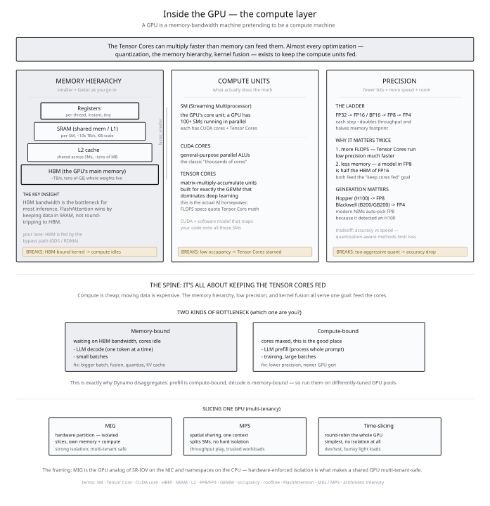
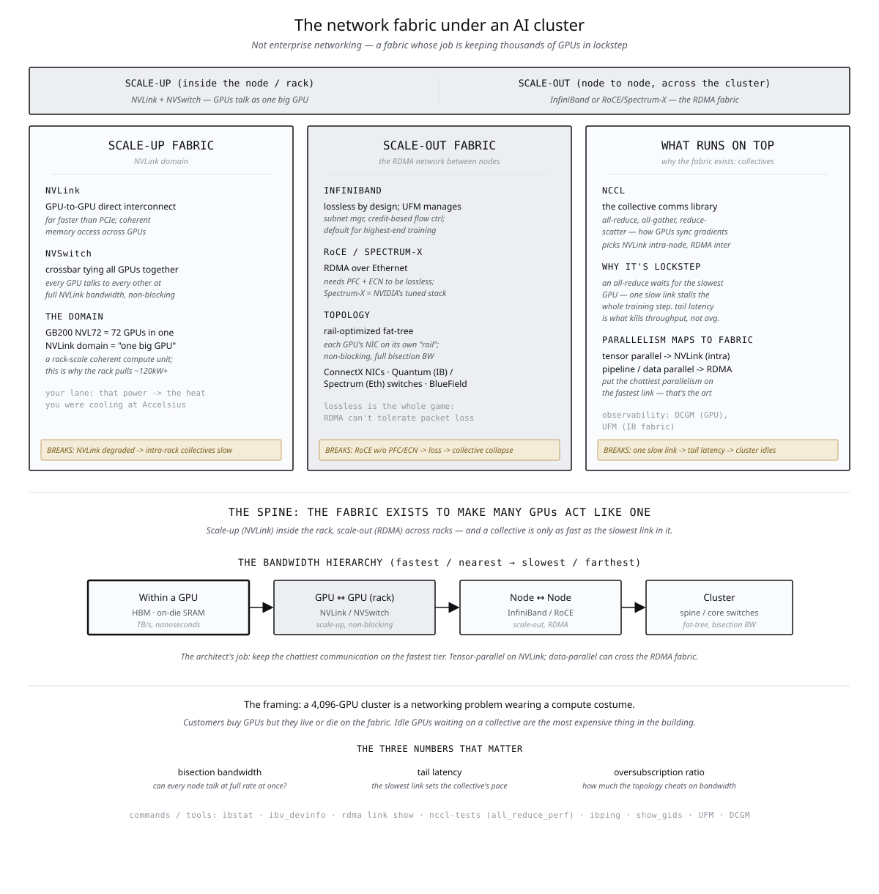
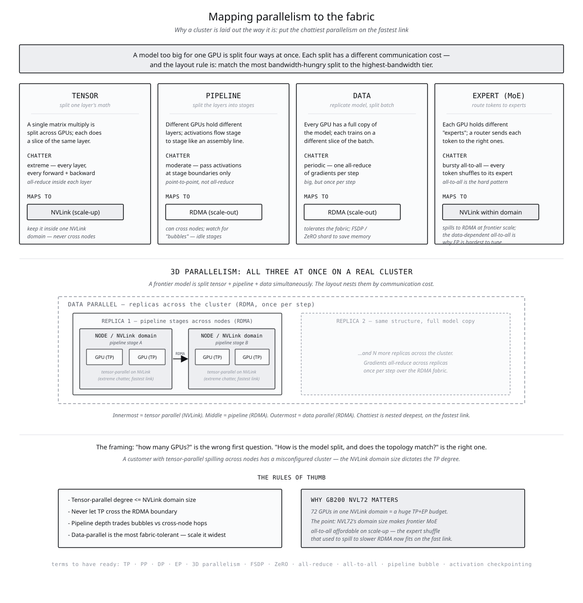
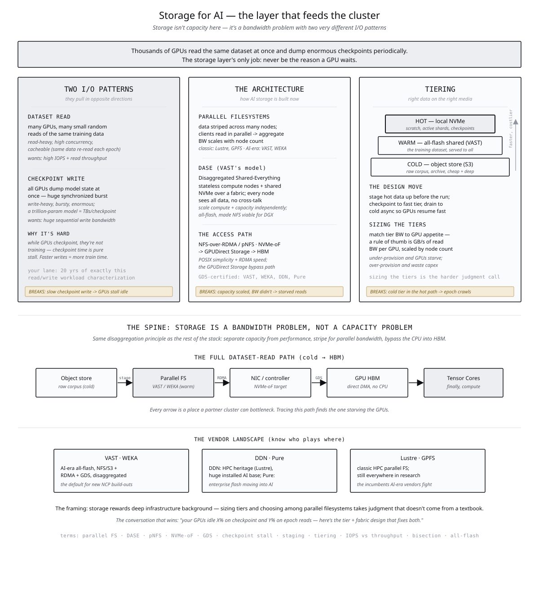
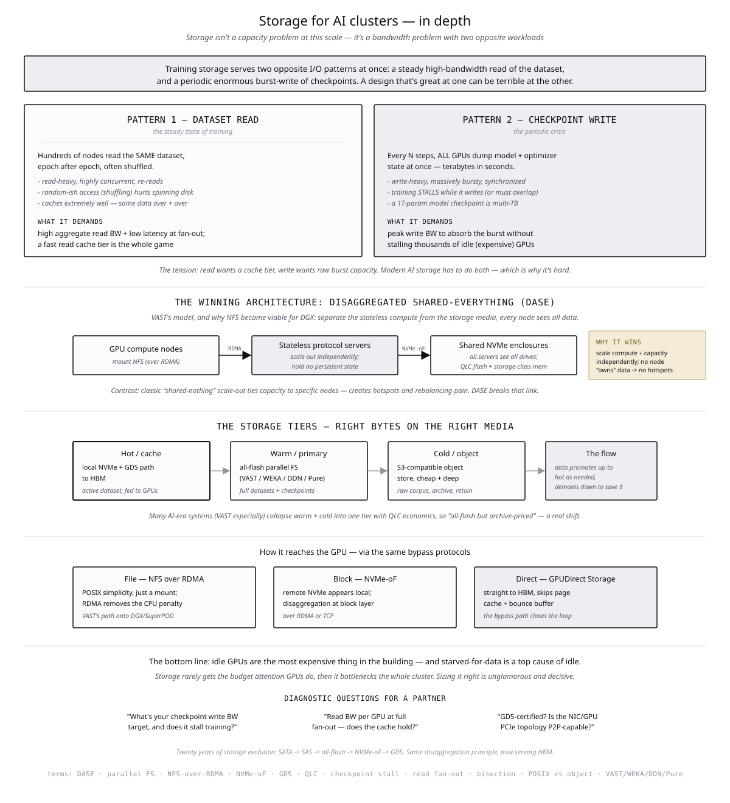
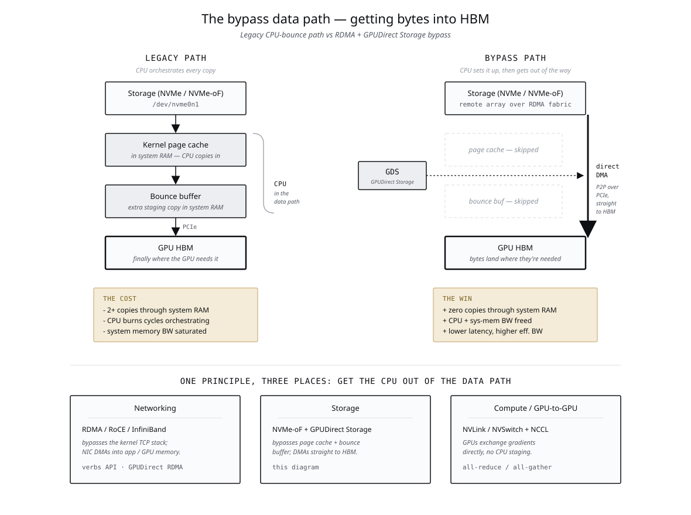
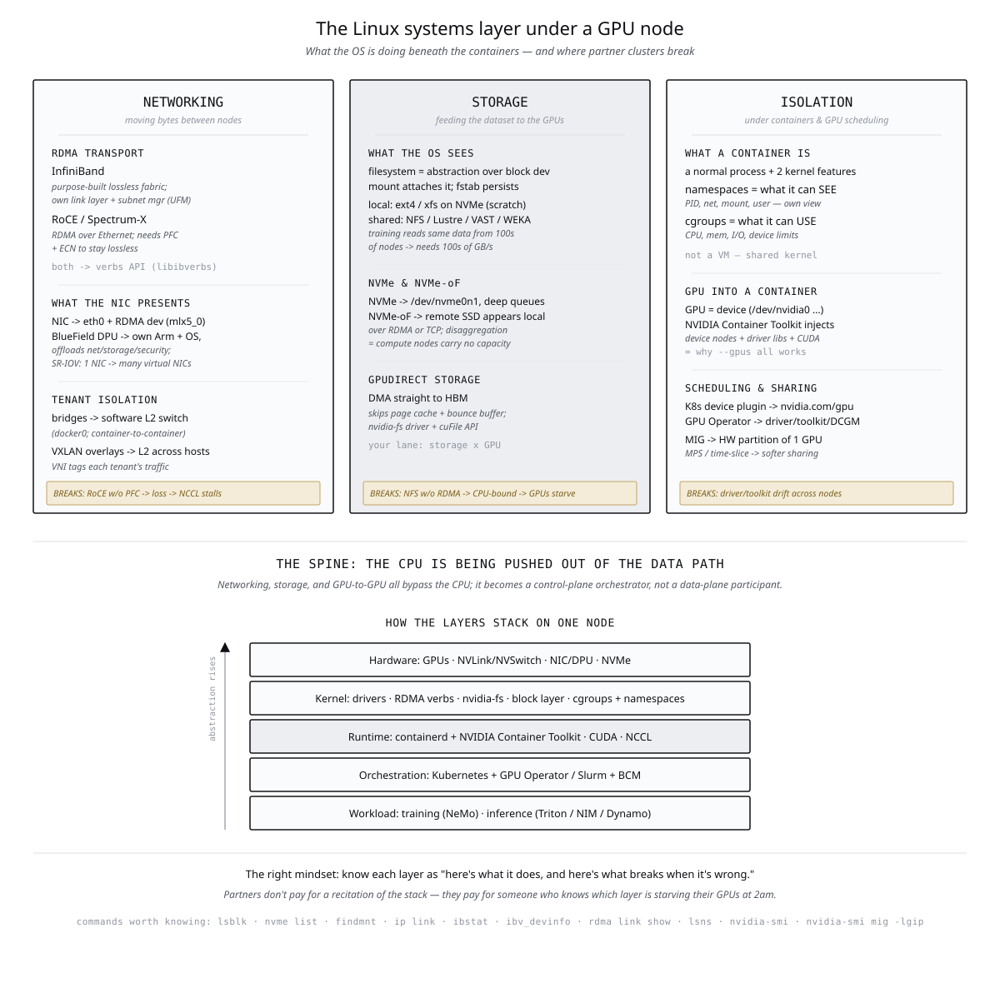

From Watts to Weights
I've been sizing AI factories from the bottom up — power envelope, cooling capacity, rack density. A modern AI-cluster customer needs the other end of that equation: model parameters, parallelism strategy, GPU count, interconnect topology.
This is the synthesis I've been building — seven diagrams walking the layers of an AI cluster from compute up through fabric and back down through storage and OS. The full chain a customer needs to size, and the seams where infrastructure-up thinking meets model-down thinking.
Most can do the parallelism math. Very few can connect it back to choices of RDHX, PG-25 liquid cool, or two-phase DTC cooling. The conversation a customer building an AI factory actually needs runs the full chain — from model arithmetic through cluster topology to power and cooling. I want to be able to hold both ends of that conversation.






